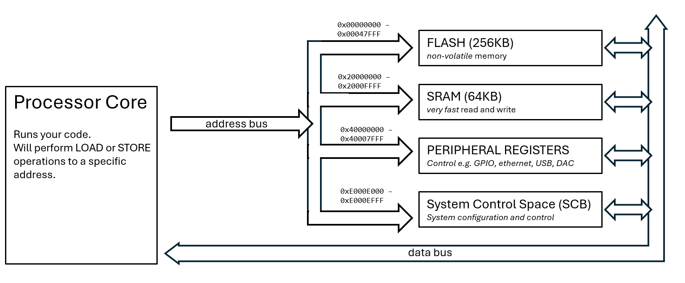
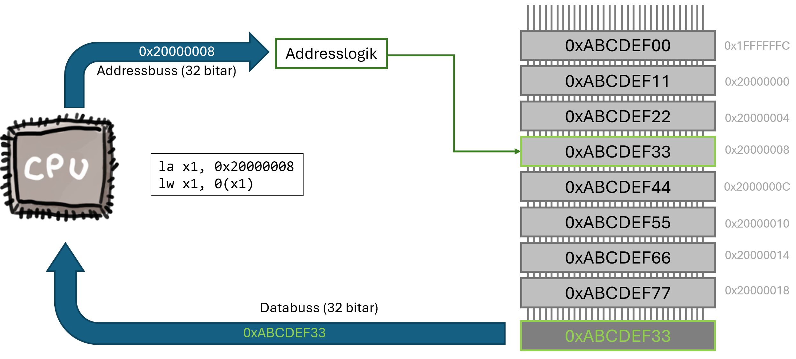
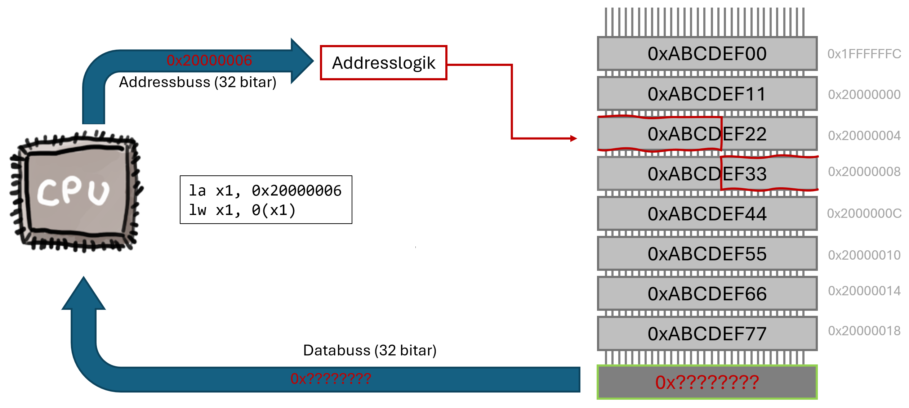
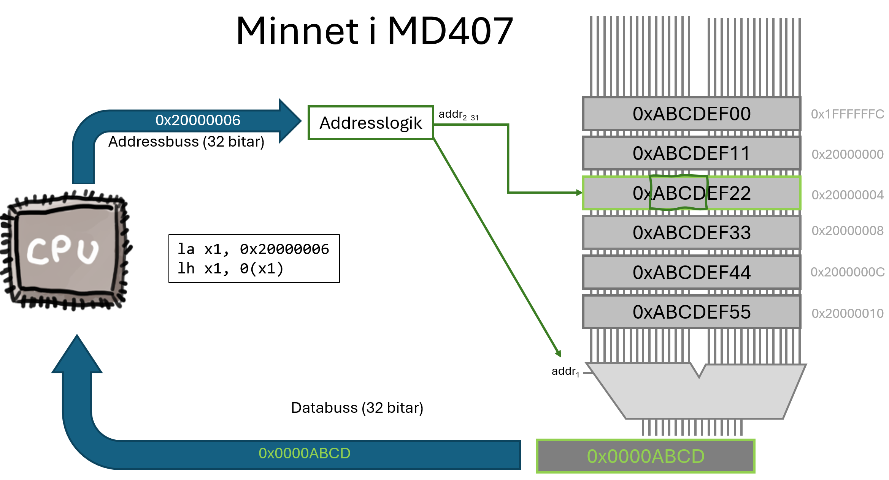
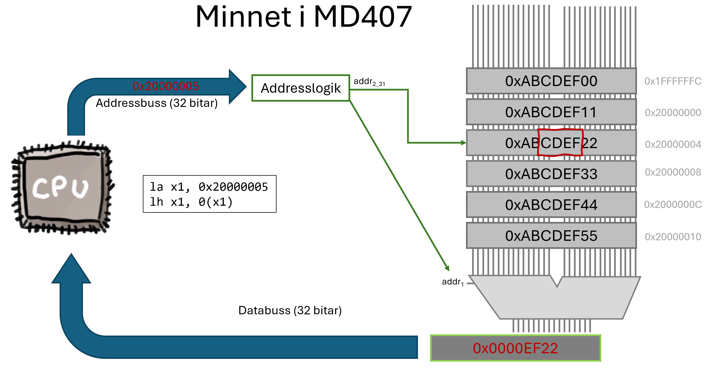

In this lecture you will learn about the basics of assembly programming on a small RISC-V processor.
In this course, you will learn to program a microcontroller based on a RISC-V processor. Today, almost every phone, computer, or smart device runs on a processor from one of a handful of companies (e.g. ARM, Intel). RISC-V changes that: it’s an open alternative that anyone can use, extend, and build on, and it is becoming increasingly important in both industry and research. In this course, you’ll learn to program real hardware built on RISC-V. So what does it mean to be a “RISC-V” processor?
RISC-V is an Instruction Set Architecture (ISA). That is, it specifies a processor’s behaviour in terms of the instruction set, the registers, and the memory model, and how all of these components interact. Anyone is allowed to use this specification to implement their own processor, without paying anyone. For example, in this course we will use the MD307 lab kit, which contains a CH32V307 microcontroller (a chip developed by the company WCH), which in turn contains (as part of the chip) a QingKe V4 processor core, which is an implementation of the RISC-V ISA.
Other companies have implemented their own processor cores, in their own microcontrollers, that are also based on the RISC-V ISA. Raspberry Pi, for instance, has implemented a RISC-V core called Hazard3 in their RP2350 microcontroller, which is the heart of the Raspberry Pico 2. Since both machines use the same ISA, they can use the same compiler toolchains to produce executable code, and can in some cases even run the same binary code, even though the actual hardware is completely different.
RISC-V is intended to be used in a huge range of devices, from small microcontrollers in your car key or fridge, to CPUs in the nodes of a machine-learning data center. Therefore, the specification is divided into what is called the base integer instruction set, which only describes 47 separate instructions, and a large number of extensions that describe instructions for additional functionality. Anyone that decides to build a RISC-V processor will have to decide which of these extensions they want to support. Implementing more extensions naturally means more work, and probably means that the chip will be more expensive and draw more power. Similarly, anyone who buys a processor for use in their product will have to choose which extensions it should support.
Let’s consider a few examples:
The microcontroller used in this course (CH32F307) is a 32-bit processor (RV32I) with the M (integer multiplication and divide), A (atomic operations), F (floating point), C (compressed instructions), Zicsr (Control and Status Register instructions), and Zifencei (instruction-fetch fence) extensions. In the remainder of the course material, we will only focus on the base instruction set (RV32I), with the M and Zicsr extensions. We will compile our programs in such a way that only these instructions are used (except in special cases), to keep the complexity down. You can find information about all the extensions and variants on the official RISC-V homepage.
Before we go any further in describing how a RISC-V processor works, it’s important to understand the ABI. While the ISA defines the rules that a hardware design must follow to qualify as a RISC-V processor, the ABI (Application Binary Interface) defines how compiled programs interact at the binary level. In other words, it provides rules for how machine code should be written so that independently compiled programs and libraries can work together.
For example, the ISA specifies that the processor must have 32 general-purpose 32-bit registers, but it doesn’t define what each register is used for. The ABI, on the other hand, specifies that when a function returns an integer, it should place the result in register x10 (also known as a0). If your assembly program - or your C compiler - follows that rule, it can seamlessly interoperate with other code that follows the same ABI.
In this course, all compilers and assembly code will adhere to the ABI. This not only ensures compatibility between different pieces of code, but also makes assembly programs much easier to understand and maintain.
Initially, we will only talk about the very basics of the RISC-V specification, RV32I. This part of the specification must be implemented by any 32-bit RISC-V processor. The specification tells us what registers shall be available, what the basic set of machine instructions are, and how they are encoded.
A processor that implements RV32I must implement 33 registers. There
are 32 general purpose registers, x0-x31 and one
program counter, pc. The general purpose registers can
contain any 32 bit word and any instruction can use either of these
registers interchangeably.
The first register, x0, is special; it is hardwired to
always be zero, and writes to it are ignored. This simplifies the
hardware and instructions by always having a 0 to feed the
ALU. We will see examples of this later on in the text.
While the ISA puts no restrictions on how these registers are used, the ABI suggests which registers are to be used for what, and gives them special names.
| Register | ABI Name | Recommended Usage (ABI) |
|---|---|---|
x0 |
zero |
Hard-wired to zero |
x1 |
ra |
Return Address |
x2 |
sp |
Stack pointer |
x3 |
gp |
Global pointer |
x4 |
tp |
Thread pointer |
x5-x7 |
t0-t2 |
Temporary. |
x8 |
s0 / fp |
Frame pointer |
x9 |
s1 |
Saved register |
x10-x17 |
a0-a7 |
Function argument / Return value |
x18-x27 |
s2-s11 |
Saved Register |
x28-x31 |
t3-t6 |
Temporary |
We will return to all of these different uses later on, and for now
it is sufficient that you are aware that, in assembly code, you can
refer to either the register name (e.g., x5) or the ABI
name (t0), and it really makes no difference other than for
compatibility and readability.
Apart from the general purpose registers, the only other register is
the program counter, pc. This register always contains the
address to the next instruction to be executed, and exists in almost all
processor designs.
💡 Note: If you have previous experience with assembly programming on other processors you might be surprised that all registers are general-purpose and that there is no specific stack pointer, link register, or even a flag register described in the ISA. There are good reasons for this, and we will address why RISC-V does not need them in upcoming sections.
The RV32I instruction set only contains 47 distinct instructions. RISC (Reduced Instruction Set Computer) architectures aim to keep instructions simple and limited in number, emphasizing a small set of frequently used operations. The idea is to keep the hardware as simple as possible, and leave it to the compiler (or programmer) to create more complex behavior by combining simple instructions. Using simple instructions often allows each one to execute in a single clock cycle, simplifies pipelining 1, and improves processor scalability.
However, this also means that a program written directly in machine instructions is not always easy for a programmer to understand. Therefore, we usually use assembly language as the lowest-level language in which we write programs. The assembly language includes all the instructions that the machine understands, but also a number of pseudo instructions that the “assembler” translates into one or more machine instructions.
As a simple example, you will have seen in previous courses that one thing we often want to do is to copy a value from one register to another. In assembly language, this looks like:
mv x1, x2 // Move (actually copy) the contents of x2 to x1However, the RV32I instruction set does not include a specific
instruction for copying values between registers. Instead, the
mv pseudo-instruction will be translated by the assembler
into:
add x1, x2, x0 // Add 0 to x2 and store the result in x1This might look strange (to someone reading the machine code), but
has exactly the same effect: the contents of x2 are copied to x1. Since
we can implement mv with add, the processor
simply reuses the add instruction. We will see many more
examples of how pseudo-instructions are compiled into machine code
later.
Another important principle behind the development of the RISC-V architecture is that it is a “Load/Store” architecture. This means that the “load” and “store” instructions are the only instructions that communicate with the memory bus. All other instructions (e.g., arithmetic instructions, shifts, or branches) operate only on registers. As an example, other processors (like the Intel x86 architecture) have instructions like:
add register_0, M(register_1) // Take the value in memory at the address
// pointed to by r1, and add it to r0In RISC-V, this is expressed in two instructions:
lw x3, 0(x2) // Load the value in memory at the address pointed to by x2
add x1, x1, x3 // Add that value to x1This might seem unnecessary, but there are several reasons behind this choice. Firstly, it greatly simplifies the hardware design (simpler hardware usually means faster and less error-prone hardware). Secondly, it makes pipelining simpler 2 and allows the compiler to make optimizations that make the code run faster.
Before we go on to write a first little program, let’s recap how a processor executes code. We will introduce a simple model that will do for now, and then extend it a little when we get to interrupts and exceptions, later on in the course.
When the machine turns on, it will enter a RESET phase,
which initializes registers and puts the processor into a known state.
After that, the following “state machine” starts running (one step every
clock cycle):
PC register will be used to fetch the next
instruction. In a basic RV32I architecture every instruction
(including all operands) is exactly 32 bits3.
When the instruction has been fetched from memory, the address in PC is
increased by 4 bytes (32 bits) so that it points to the next
instruction.add) and the operands (e.g., source register x1
and destination register x2). The processor will now look at these bits
and decide on the operation to execute. For example, if the instruction
is add x1, x2, x0, it will make registers x2
and x0 available as the inputs to the ALU and will
configure the ALU to do an addition.add instruction, or calculating the address of a
load instruction.When the “store” phase is complete, the cycle starts again from the beginning.
💡 Note: If all of this were strictly true, the processor would only execute an instruction once every four clock-cycles when, in fact, it will execute approximately one instruction every clock-cycle. This is due to pipelining and instruction pre-fetching, which is out of scope for this course.
We will now look at how to write assembly code for a very simple program, and examine what machine code the assembler produces. Let’s say we want our program to do the following:
1. Put the value 10 in t0
2. Decrease the value in t0 by 2
3. If t0 > 0, go back to line 2In RISC-V assembly code, we could write this as:
li t0, 10 # 1. Load 10 into t0
loop:
addi t0, t0, -2 # 2. Subtract 2 from t0
bgtz t0, loop # 3. If t0 > 0, go back to 'loop'In the first line: li t0, 10, li stands
for “Load Immediate”, that is, we load a register with a value given
immediately in the code (not a value from memory). The first operand,
t0, is the destination register, and the second
value is the value we want to put there.
The second line is just a “label”. When compiled, every instruction will be at a specific address in memory and the label, “loop” in this case, will be translated to that the address that the next instruction starts at.
On the third line, addi t0, t0, -2,
addi stands for “Add Immediate”. Again, “immediate” means
that the value that we want to add to the source register is given
directly in the instruction. The first operand is, again, the
destination register. The second operand is the source
register, and the third operand is the value we want to add to the
source register and put in the destination register. Note that there is
no “Subtract Immediate” instruction, because adding -x to a
register is the same as subtracting x.
Finally, on the fourth line: bgtz t0, loop,
bgtz stands for “Branch if Greater Than Zero”. The first
operand is the register we want to check, and the second operand is the
label (address) we want to jump to if the value of that register is
greater than zero.
Now let’s see what happens if we compile this assembly program to
machine code. If we take the machine code created by the assembler and
ask the objdump tool to tell us what instructions it
represents, the answer is:
addi t0,zero,10
loop:
addi t0,t0,-2
blt zero, t0, loopThis is slightly different from the code we wrote! Let’s see what changed and why:
li t0, 10 ➔ addi t0, zero, 10: The “Load
Immediate” instruction that we used is a pseudo instruction. The
processor does not have to implement this instruction, because it
already has the “Add Immediate” instruction. By adding the constant 10
to the “zero” register (which is always 0), and store the result in
t0, we achieve the same thing.bgtz t0, loop ➔ blt zero,t0: In our
assembly code, we used the “Branch if Greater Than Zero” instruction,
but the assembler has translated this into the “Branch if Less Than”
instruction. It compares if 0 is less than t0, and jumps if
that is true. This is equivalent because (x > y) ➔ (y < x).In this course, you will learn how to write assembly code, and we will not worry too much about what machine code it turns into, most of the time. It is important to understand, however, that even when writing assembly, the code you write is not always exactly the code that is executed. So far we have seen that the assembler will sometimes replace your pseudo instruction with an equivalent instruction and next we will see that some pseudo instructions will turn into several machine code instructions.
We will now change the very first line of our program to:
li t0, 1000000The only difference is that we load the register with one million, rather than 10. If we examine the machine code now, we will see that this turns into:
lui t0,0xf4
add t0,t0,0x240Feel free to raise an eybrow and shake your head a little at this
point. When you are done, let’s see what happened. When we asked the
assembler to put the value 10 into t0, this could be
achieved with a single “addi” instruction. In machine code, any
instruction is coded into a 32-bit value, and the processor knows how to
decode this value. The value will consist of an “opcode” that identifies
the type of instruction, and some operands to the instruction. In the
case of the addi instruction, this looks like4
:
| Opcode | Function | Source Register | Destination Register | Value |
|---|---|---|---|---|
| 7 bits | 3 bits | 5 bits | 5 bits | 12 bits |
So there are 7 bits for the opcode (which allows for 128 different opcodes), 3 bits for the “function” (different variants of the same instruction), 5 bits for the registers (which let’s us point out any of the 32 general-purpose registers) and 12 bits for the value that we want to add. When the assembler is asked to load a value that does not fit into 12 bits, it simply cannot express that in a single, 32-bit, instruction.
Instead, it will translate your assembly instruction into
two machine instructions. The first instruction,
lui, stands for “Load Upper Immediate”. It takes a
destination register and a 20-bit value as operands, and it loads the
20-bit value into the 20 upper bits of the destination register.
Since 1000000, in decimal, is 0xf4240 in hexadecimal,
t0 will be loaded with the value 0x000F4000
after the lui instruction. The next instruction has to fill
in the lower 12 bits, which can be achieved with an add
instruction (where we have 12 bits for the value).
The table below lists all the ALU instructions in RV32I (the instructions that perform some operation on the operands and stores the result in a register). These can be divided into “register-register” instructions where the operands consists only of registers, and “register-immediate” instructions, where one of the operands is a (small) constant that is embedded in the instruction’s machine code. All immediate instructions end with i (for immediate), except for a few that use u to indicate unsigned interpretation of the immediate value.
Throughout this table, and the rest of the text, rd
means “destination register” and rs means “source
register”.
| Instruction | Mnemonic | Result |
|---|---|---|
lui rd, imm |
Load upper immediate | rd ← imm << 12 |
auipc rd, imm |
Add upper immediate to PC | rd ← PC + (imm << 12) |
li rd, imm |
Load immediate | rd ← imm |
la rd, symbol |
Load address | rd ← address |
lla rd, symbol |
Load local address | rd ← local address |
| Instruction | Mnemonic | Result |
|---|---|---|
addi rd, rs1, imm |
Add immediate | rd ← rs1 + imm |
xori rd, rs1, imm |
XOR immediate | rd ← rs1 ^ imm |
ori rd, rs1, imm |
OR immediate | rd ← rs1 | imm |
andi rd, rs1, imm |
AND immediate | rd ← rs1 & imm |
add rd, rs1, rs2 |
Add | rd ← rs1 + rs2 |
sub rd, rs1, rs2 |
Subtract | rd ← rs1 − rs2 |
xor rd, rs1, rs2 |
XOR | rd ← rs1 ^ rs2 |
or rd, rs1, rs2 |
OR | rd ← rs1 | rs2 |
and rd, rs1, rs2 |
AND | rd ← rs1 & rs2 |
mul rd, rs1, rs2 |
Multiply (lower 32 bits) | rd ← (rs1 × rs2)[31:0] |
mulh rd, rs1, rs2 |
Multiply high (signed × signed) | rd ← (rs1 × rs2)[63:32] (signed) |
mulhu rd, rs1, rs2 |
Multiply high (unsigned × unsigned) | rd ← (rs1 × rs2)[63:32] (unsigned) |
mulhsu rd, rs1, rs2 |
Multiply high (signed × unsigned) | rd ← (rs1 × rs2)[63:32] (signed × unsigned) |
div rd, rs1, rs2 |
Divide (signed) | rd ← rs1 ÷ rs2 (signed) |
divu rd, rs1, rs2 |
Divide (unsigned) | rd ← rs1 ÷ rs2 (unsigned) |
rem rd, rs1, rs2 |
Remainder (signed) | rd ← rs1 % rs2 (signed) |
remu rd, rs1, rs2 |
Remainder (unsigned) | rd ← rs1 % rs2 (unsigned) |
| Instruction | Mnemonic | Result |
|---|---|---|
slli rd, rs1, imm |
Shift left logical immediate | rd ← rs1 << imm |
srli rd, rs1, imm |
Shift right logical immediate | rd ← rs1 >> imm |
srai rd, rs1, imm |
Shift right arithmetic immediate | rd ← rs1 >>> imm |
not rd, rs |
Bitwise NOT | rd ← ~rs |
| Instruction | Mnemonic | Result |
|---|---|---|
nop |
No operation | No effect |
mv rd, rs |
Move register | rd ← rs |
neg rd, rs |
Negate | rd ← −rs |
Several of these instructions are actually pseudo instructions. You can find out how they are implemented and other useful information in the QuickGuide.
We have seen the basic instructions that let us perform calculations on constants and values in registers. But there is very little point in doing that if we cannot somehow communicate the results to a user, or store them in memory. This is all done by the Load and Store instructions, which we will discuss next.
It is important to understand that all communication with
things outside the processor core happens via load/store operations. Our
processor has an SRAM (a 64KB read/write memory module) mapped to the
address range 0x20000000-0x2000FFFF, so any reads or writes
to addresses within that range will go to memory. Other memory areas are
the “System Control Space” and the “Peripheral Registers” area. You can
see an overview of the memory mapping in the figure below. We will talk
about how these other areas are used later on in the course, but for now
we will stick to the SRAM.

Let’s say we want to read the third byte in SRAM into a register. You could write:
la t0, 0x20000002
lb t0, 0(t0)The first instruction la (Load Address) takes two
operands: a destination register (t0) and an address
(0x20000002, the third byte in SRAM). Since we prepended
the address with 0x, the address will be expected to be in
hexadecimal form. The result of this pseudoinstruction is that the
address will end up in register t0 and the instruction will
be expanded into one lui and one addi
instruction, just as for the li pseudoinstruction that we
discussed in the previous section.
The second assembler instruction, lb (Load Byte), takes
three operands. The first operand (t0) is the destination
register (as usual). The second operand (0) is the
offset from the base address, which is the third
operand (t0).
When the address is put on the address bus, there is logic on the
chip that will first note that this address is in the SRAM memory area
(0x20000000-0x2000FFFF). It will subtract
0x20000000 from the address, and pass the resulting address
(2) on to the SRAM module. Let’s say the third byte
contains the value 9. The SRAM will read out this byte and
put it on the 32-bit data bus by first sign-extending it to 32 bits
[^6]. Whatever t0 contained before, it will now contain the
32-bit value 0x00000009.
There are a few important things to note about this simple read operation:
lb (Load Byte), lh (Load Halfword),
or lw (Load Word) respectively.Storing data works in very much the same way. We first load a base
address into a register using la and then write a
register’s value to that address using the sb (Store Byte,
8 bits), sh (Store Halfword, 16 bits), or sw
(Store Word, 32 bits) instruction.
As an example, let’s say we want to store the values 1, 2, and 3 into the first three half-words of the SRAM 5. We could write:
la x1, 0x20000000 // Put the base address 0x20000000 (start of SRAM) in x1
li x2, 1 // Put the value 1 into x2
sh x2, 0(x1) // Store the lower two bytes of x2 into memory at address
// base register (x1) + offset (0) = 0x20000000
li x2, 2 // Put the value 2 into x2
sh x2, 2(x1) // Store the lower two bytes of x2 into memory at address 0x20000002
li x2, 3 // Put the value 3 into x2
sh x2, 4(x1) // Store the lower two bytes of x2 into memory at address 0x20000004On the first line, we load the base address 0x20000000
into x1. We will then use this as the base address for
all three store operations. On the second line, we just load
the value 1 into another register (x2). On the third line
we do the first actual store operation. The value in x2
gets stored into memory at address 0x20000000. The address
is calculated by taking the value in x1
(0x20000000) and adding the offset from the instruction
(0). Note that the offset is always given in
bytes, not words or halfwords.
This is then repeated for the second and third values, where the offsets are 2 and 4, respectively.
Things to note about the store instruction:
So far, we have read and written data to memory at absolute addresses. Sometimes that is exactly what we want to do, but often we just want to store data in a variable without caring where in memory it resides.
Let’s look at a final example where we have two variables,
var_a and var_b, each one byte in size, and we
want to add them together and store the result in x1:
// Load the value of var_a into x2
la x1, var_a
lb x2, 0(x1)
// Load the value of var_b into x3
la x1, var_b
lb x3, 0(x1)
// Put the sum in x1
add x1, x2, x3
// x1 should now contain 30
var_a: .byte 10
var_b: .byte 20When the assembler 6 sees the first line:
la x1, var_a, it replaces the variable name with the
address of the label var_a. We could calculate that address
ourselves (by counting the instructions that precede the label) but that
would be terribly annoying and rather pointless.
At the end of the code, we “allocate” space for the variables:
var_a: .byte 10Here, var_a: is a label that marks a memory location,
and .byte 10 reserves one byte at that location and
initializes it to 10. The same applies to var_b.
An important point to note is that, irrespective of whether an 8-, 16-, or 32-bit integer is loaded into a register, the value is represented internally as a 32-bit integer. For unsigned integers, this simply means that the value is placed in the least significant bits of the register, while the remaining higher-order bits are filled with zeros. The situation is more subtle for signed integers.
Consider the following example:
unsigned char a = 251; // 0xFB in memory
signed char b = -5; // 0xFB in memory
int c = a + b;Since 251−5=246, we expect c to hold the value 246 after
these statements. However, when stored in memory as single bytes, both
a and b have the bit pattern
0xFB. Consequently, whenever a value smaller than 32 bits
is loaded from memory, the processor must be told whether the value
should be interpreted as signed or unsigned.
If the value is signed, it must be sign-extended before being placed
into a register. Sign extension is straightforward: the most significant
bit of the original value (bit 7 in the case of a char) is
replicated into all higher-order bits of the destination register.
In assembly, the code above might be written as follows:
la t0, a # Load address of `a` to t0
lbu t0, 0(t0) # Load `a` as an unsigned byte into t0. t0 = 0x000000FB
la t1, b # Load address of `b` into t1
lb t1, 0(t1) # Load `b` as a signed byte into t1. t1 = 0xFFFFFFFB
add t2, t0, t1 # Add values into t2.
la t3, c # Load address of `c` into t3
sw t2, 0(t3) # Store the 32-bit result to memorySince loading variables to registers from memory and storing variables from register to memory are very common operations, there are very useful pseudo instructions available that simplify this in the assembly language.
To load a variable, var_a from memory, into register
x1, with a single (pseudo) instruction, you can write:
lb x1, var_aTo store the contents of register x1, into a variable
var b, with a single (pseudo) instruction, you can
write:
sb x1, var_b, x2Now, where did that x2 come from? Think about the
actual instructions that this pseudo instruction has to create;
In order to store the contents of x1 into the variable, it first has to
calculate the address to the variable and put that into a register. The
assembler cannot choose a register on its own, since it does not know
what registers you (the programmer) want to preserve. Therefore, in the
sb instruction, you supply a temporary register
that it can use for the address calculation.
In the former example (with the lb instruction) we do
not have to supply a temporary register, since the assembler knows that
it is going to overwrite the contents of x1 and can use the
same register for address calculations.
💡 Note: If you look at the machine instructions
created when using these pseudo instructions, you will probably see that
they turn into two instructions, one auipc instruction and
one lb/sb instruction, rather than the three
instructions you would get from la and then
lb. This is just the most efficient way of implementing
it.
To summarize, every load or store operation requires calculating the
address where we want to read or write the value. Often, this is done
with the pseudoinstruction la (Load Address):
la rd, address // Put the address into the destination register rdThe address can either be an absolute address (e.g.,
0x20000002) or a variable name. The load and store operations
themselves are given in the following table. Some of these you have seen
and some will be discussed further in the next lecture.
| Instruction | Mnemonic | Result |
|---|---|---|
lb rd, offset(rs1) |
Load byte (signed) | rd ← sext(M(rs1 + offset)) [1 byte] |
lh rd, offset(rs1) |
Load halfword (signed) | rd ← sext(M(rs1 + offset)) [2 bytes] |
lw rd, offset(rs1) |
Load word | rd ← M(rs1 + offset) [4 bytes] |
lbu rd, offset(rs1) |
Load byte unsigned | rd ← zext(M(rs1 + offset)) [1 byte] |
lhu rd, offset(rs1) |
Load halfword unsigned | rd ← zext(M(rs1 + offset)) [2 bytes] |
sb rs2, offset(rs1) |
Store byte | M(rs1 + offset) ← rs2 [1 byte] |
sh rs2, offset(rs1) |
Store halfword | M(rs1 + offset) ← rs2 [2 bytes] |
sw rs2, offset(rs1) |
Store word | M(rs1 + offset) ← rs2 [4 bytes] |
In all of these instructions, offset is a small number
(12 bits) and rs1 is a register containing the base
address. sext means “sign extend”, and zext
means “zero extend”.
So far, we have carefully and skillfully avoided one thorny issue that most novice assembler programmers find a bit challenging: Memory Alignment. Hopefully, this section will help you realize that it is not very difficult at all.
Whatever type of memory module you encounter, the data will be stored as bits that are either 0 or 1. To read or write data you will supply the memory with an address that is expressed in bytes. In the simplest, old, 8-bit, memories the address would be sent to the memory chip (one line per bit) and the memory chip would output the eight bits of data on that address onto the data bus.
On more modern hardware, and specifically on our CH32F307, the
registers are 32 bits wide, and it is much more common that we want to
load or store 32 bits at once. Therefore, the data bus is 32 bits wide
so that we can send an address to the memory “chip” 7 and
read a whole 32-bit word in one cycle. The figure below illustrates such
a read operation, where the processor reads a 4-byte word, starting at
the address 0x20000008.

TODO: Make memory grow upwards.
This works fine. The processor will put the byte address
0x20000008 on the address bus, and the address logic can
divide this by 4 to find which word it should put on the data
bus. Now consider what happens if the processor wants to read a 4-byte
word starting at address 0x20000006 instead:

Now we have a problem. A 4-byte word starting at
0x20000006 would span over two rows in the memory.
The memory module cannot simply pick one of the words and put it on the
data bus. The solution would be to first put the word starting on
0x20000004 in a register, then shift that two bytes to the
right, then read the word starting at 0x20000008 in another
register and shift that two bytes to the left, and finally ORing these
two registers onto the data bus.
While that is by no means impossible, it would mean much more complicated logic in the memory module, and it would mean that reading out the word would take at least two cycles, instead of one. Instead, most architectures simply do not allow these kinds of accesses 8:
Rule: 4-byte words must be 4-byte aligned (address divisible by 4)
Another way to say this is that a 4-byte word must be 4-byte aligned in memory. If we do not follow this rule, the program will simply crash (actually, it will cause an “exception”, but more on that later).
What if we try to read or write a 2-byte word? This is illustrated in the two figures below:
 |
 |
|---|
When trying to access a halfword (2 bytes) at address
0x20000006 the address logic can simply divide the address
by four to find the row in memory containing the halfword. It can then
use the remainder as input to a MUX that chooses the upper or lower part
of the word to put on the data bus. This logic is simple enough to
include in the memory chip, and completes in a single cycle, so this
access is allowed.
Consider the case on the right, however, where we want to read a
halfword from address 0x20000005. Now, even though the
halfword is “inside” one row of memory, the simple MUX logic
doesn’t quite work. If we tried to read a halfword from, e.g., address
0x20000007 instead, the situation would be the same is
above; the halfword resides in two different rows of the memory. For
halfwords, the alignment rule simply boils down to:
Rule: 2-byte words must be 2-byte aligned (address divisible by 2)
Finally, if we read a single byte (with lb) there are no
alignment rules. A byte will always reside in exactly one of the 32-bit
rows, so the logic to extract it onto the databus is very simple.
In this course, you will encounter many scenarios where you accidentally break one of these rules and crash your program, since we will do a lot of programming with absolute addresses. When working with variables, however, there is a simple syntax that makes sure that your data is correctly aligned.
Let’s revisit the example code with variables above, but this time,
var_b is a four byte word:
// Load the value of var_a into x2
la x1, var_a
lb x2, 0(x1)
// Load the value of var_b into x3
la x1, var_b
lw x3, 0(x1)
// Put the sum in x1
add x1, x2, x3
// x1 should now contain 30
var_a: .byte 10
var_b: .word 20Since the first machine code instruction starts at 0x20000000, and
all machine code is 32 bits on our platform, we know that
var_a will be at an address that is divisible by 4. At that
address, we make room for one byte so var_b will
not be on an address that is dividible by 4! That means that if
we compiled and ran this program, the lw instruction on
line 6 would crash.
To avoid this, we simply tell the compiler that we want
var_b to be word aligned:
var_a: .byte 10
.align 2
var_b: .word 20The syntax here is a bit confusing. The .align x
directive means that the compiler should insert a number of empty bytes
here, so that the next address is divisible by 2^x. So, if
we want a word-aligned address, we say .align 2 and if we
want a halfword-aligned address, we say .align 1.
Links: Unprivileged ISA , RISC-V Assembly Programmer’s Manual, RISC-V ABI Specification
Text and excercises in the Workbook (Arbetsboken) Chapter 1, Pages 7-16 Chapter 1, Pages 24-33
Pipelining is when the processor executes several instructions at once, and will not be covered in this course. It is explained in detail in the Computer Architecture course.↩︎
Pipelining is when the processor executes several instructions at once, and will not be covered in this course. It is explained in detail in the Computer Architecture course.↩︎
On other architectures, instructions may be followed by
operands, and a RISC-V with the C extension allows for
“compressed” instructions that are 16 bit wide, but in this course we
will only use purely 32-bit instructions.↩︎
This is not the exact ordering of the bits used in reality.↩︎
Don’t try this at home! The beginning of SRAM is usually where your code resides.↩︎
To be precise, the final address is actually calculated by the linker, but we will cover that in a later lecture.↩︎
The SRAM we are accessing is actually not its own chip, but is built into the same chip that holds the processor.↩︎
To be perfectly honest, modern architectures, including CH32V307, actually do implement this logic and you can enable unaligned accesses. It is, however, good practise not to as it will affect performance, sometimes severely.↩︎